Vanderbilt · Anchor's Edge · ATD facilitator guide · print edition
The Standard Walk, the facilitator guide

Run of show
| Screen | Full (min) | Core (min) |
|---|---|---|
| Welcome / QR | 3 | 2 |
| The mission | 3 | 2 |
| The goal we are targeting | 3 | 2 |
| Objectives | 2 | 1 |
| Agenda | 2 | 1 |
| The evidence walk | 8 | 6 |
| The commitment draft | 10 | 7 |
| The rehearsal | 9 | 6 |
| The core idea | 2 | 1 |
| Recap quiz | 5 | 4 |
| Capstone commitment | 6 | 4 |
| Closing | 2 | 2 |
| Total | 55 | 38 |
The goal this month serves
Goal 2, Manager Effectiveness at Scale.
Audience
Vanderbilt people managers and team leads, in person with their navigator. Works for 8 to 30 at tables of 4 to 6; each manager needs a printed standard walk sheet and a pen. Best after the month's Monday session, and it stands alone.
Room setup
In person, navigator led: projector plus presenter device, tables that pair easily, learners on their own devices via the welcome-slide QR. Nothing typed into the deck is saved or sent.
Materials
- Meeting platform with screen share and breakout rooms; deck link ready to paste in chat
- Facilitator machine with the facilitator edition open; notifications off
- Learners on their own devices with the learner link
- Chat open for share-outs; the capstone copy button pastes there cleanly
A week before
- Run the learner edition start to finish and do every interaction honestly; you will demo at least one live.
- Read this month's theme page on the Anchor's Edge dashboard so the goal tie-in is fluent.
- Send the invite with the learner link and one line on what to bring.
The day before
- Test screen share with the facilitator edition; confirm the notes rail is readable.
- Open the learner link on a second device; the QR must land there.
- Run the section interactions once so you can drive them without reading.
30 minutes before
- Welcome slide up as people join; link pasted in chat.
- Close every other tab; silence the machine.
- Breakout rooms pre-configured in pairs.
When things go sideways
If The projector or room screen fails: The clinic survives on paper: the walk sheet, the drafts, and the rehearsals need no screen. Read the interaction rounds aloud from your own device.
If Odd numbers leave someone without a rehearsal partner: Make one trio: two listeners catch more than one, and the third voice keeps the feedback honest.
If A manager gets visibly discouraged by a sheet full of blanks: Sit with them at the break: a sheet full of blanks usually means honest grading, which is the rarest skill in the room. One commitment is today's whole job; the rest of the sheet is a map, never a verdict.
If Someone asks whether the walk sheets get collected or reported: Answer before the worry spreads: the sheet is theirs, nothing is collected, and Goal 2 measurement runs through the formal process their HR partner owns. Today is private practice with witnesses they choose.
Tough questions, ready answers
Q: Does anything from this clinic feed my performance review?
No. The walk sheet stays in your hands, nothing is collected, and the room has no reporting behind it. Goal 2 measurement runs through the formal process your HR partner owns. What changes your review is the behavior itself, visible to your team over months.
Q: My biggest gap is a behavior I honestly think does not fit my team's work. What now?
Say that out loud to your own leader rather than quietly exempting yourself; the standard expects that conversation. Draft the commitment for your second-biggest gap today so the clinic still pays, and bring the fit question to your navigator or HR partner this week.
Q: Announcing a commitment to my team feels like admitting I have been failing them.
Teams already know your gaps; they live with them. What they rarely see is a manager naming one out loud with a date attached, and that move builds more credibility than the gap ever cost. It also models exactly what the standard asks of everyone.
Copy-paste templates
Pre-work invite (paste into the calendar invite)
Subject: In person this month: the Manager Standard walk-through clinic. Bring nothing; walk sheets and pens are in the room. If you can, arrive holding a rough sense of which behavior your Monday self-locate flagged. Nothing you write in the room is collected.
7-day pulse (send one week after)
Subject: Did the witness hear it? Three lines, reply whenever: 1) Has a witness heard your commitment? 2) Did the first instance happen on its date? 3) What did the evidence walk change for you?
After the session
Seven days out, send the pulse: 'Has a witness heard your commitment? Did the first instance happen on its date? What did the evidence walk change?' Count of commitments said to a witness is the month's Goal 2 signal.
Welcome / QR Full 3 min · Core 2
Get everyone into the deck on their own device and set the tone: 90 minutes, in person, hands on.
Say
“Welcome to the Navigator Workshop. Scan the code so this session runs on your device too. 90 minutes, one focus: The Manager Standard walk-through clinic: evidence, commitments, rehearsal.”
Do
- Slide projected as people arrive; phones up before you speak.
- State the norm once: type into your own device, nothing you enter is saved or sent.
Watch for: People lurking without the deck open. The interactions only land if the deck is on their screen.
Transition: “Before the topic, thirty seconds on why Vanderbilt is asking for this hour.”
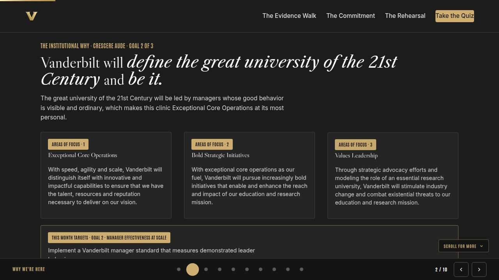
The mission Full 3 min · Core 2
Anchor the session in the Chancellor's charge so the next 40 minutes read as mission work, not admin.
Say
“This year of learning hangs off one sentence from the Chancellor: Vanderbilt will define the great university of the 21st Century and be it. The great university of the 21st Century will be led by managers whose good behavior is visible, ordinary, and expected. This clinic is Exceptional Core Operations at its most personal: one manager, one standard, evidence on the table.”
Do
- Read the mission line slowly, once.
- Point at the tie-in line and let it sit; no discussion needed here.
Transition: “That is the why. Here is the number we are moving.”
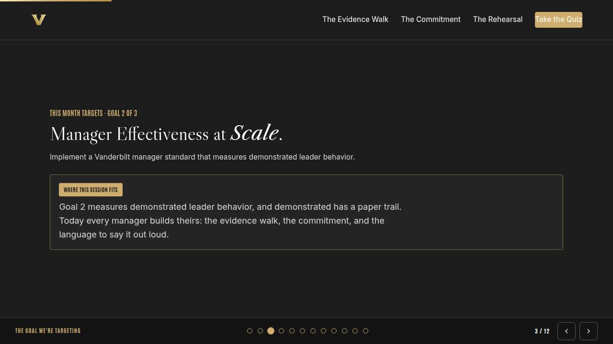
The goal we are targeting Full 3 min · Core 2
Name the enterprise goal this month serves.
Say
“Every month of Anchor's Edge lands on one of three enterprise goals. This month is Goal 2, Manager Effectiveness at Scale: Implement a Vanderbilt manager standard that measures demonstrated leader behavior. Goal 2 measures demonstrated leader behavior, and demonstrated has a paper trail. Today every manager builds theirs: the evidence walk, the commitment, and the language to say it out loud.”
Do
- Read the goal once, plainly.
- One line, not a lecture: this session is one of the moves that serves it.
Transition: “Here is what you will be able to do in 90 minutes.”
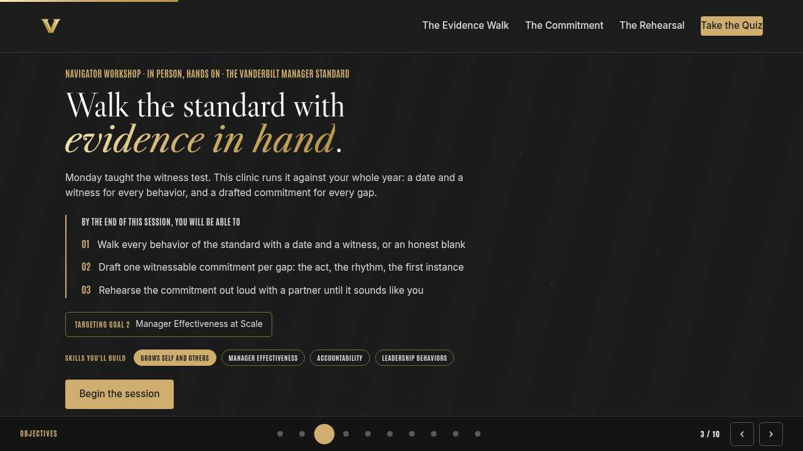
Objectives Full 2 min · Core 1
Set the contract for the session in under a minute.
Say
“By the end of this session: walk every behavior of the standard with a date and a witness, or an honest blank; draft one witnessable commitment per gap: the act, the rhythm, the first instance; rehearse the commitment out loud with a partner until it sounds like you. That is the whole contract.”
Do
- Read the three objectives briskly; do not elaborate yet.
Transition: “Three stops to get there.”
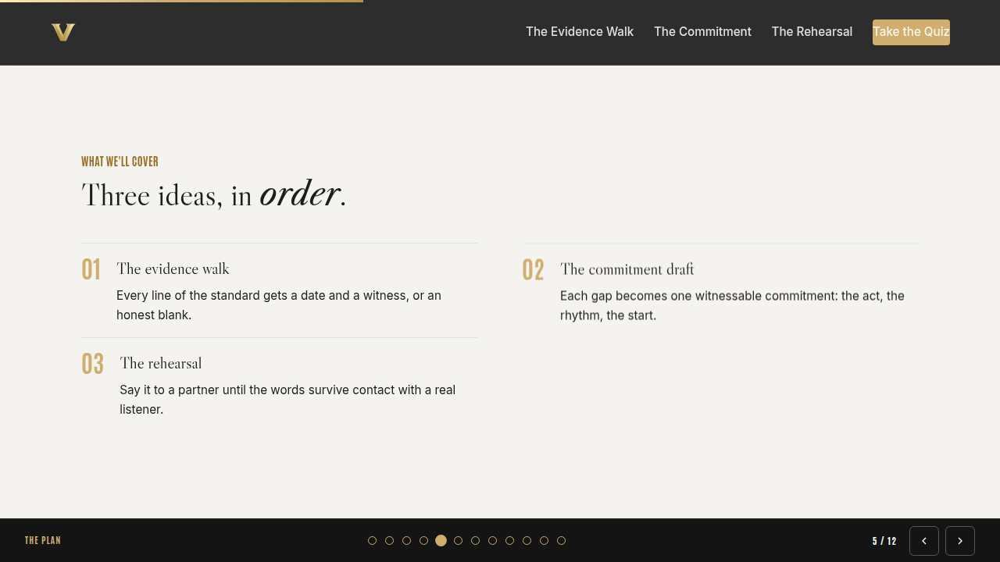
Agenda Full 2 min · Core 1
Show the path so the room can pace itself.
Say
“Three stops: the evidence walk, the commitment draft, the rehearsal. Each one has something to play with, so keep the deck open.”
Do
- Point once at each stop; ten seconds each.
Transition: “Stop one.”
Core path: Core: skip the read-through, gesture at the slide in passing.
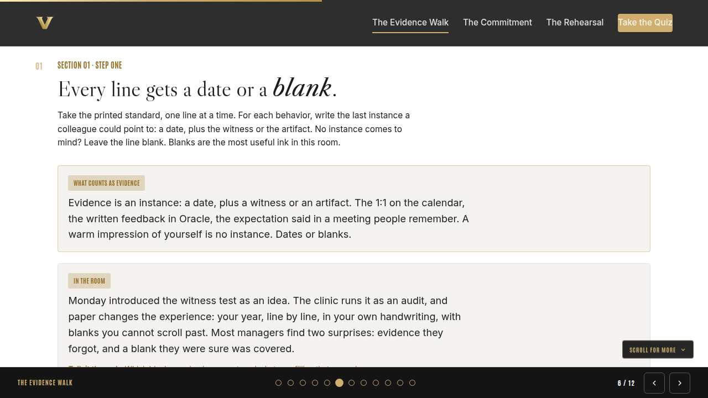
The evidence walk Full 8 min · Core 6
Every manager audits the full standard on paper: a date and a witness per line, or an honest blank.
Say
“Sheets out, pens up. Monday you met the witness test as an idea; today you run it as an audit. For every line of the standard, write the last instance a colleague could point to: the date, plus the witness or the artifact, like the calendar entry or the written feedback in Oracle. If nothing comes, leave it blank and move on. Nobody collects this sheet. The blanks are for you, and they are the most valuable thing you will write today.”
Do
- Distribute the walk sheets; the flip chart carries the evidence rule: an instance is a date plus a witness or an artifact.
- Give the room long quiet time; walk the tables and gently challenge suspiciously full sheets by asking for the date on one entry.
- Show the In the room card and run the discussion; take two or three voices on the surprising blank.
- Run the table exercise: one surprise per manager, stronger or weaker than expected.
Ask
“What did your sheet show you that your self-image had been covering?”
Expect:
- A behavior I do constantly and never noticed counts
- A blank where I was sure I was strong
- Evidence all clustered in one good month
Respond: The clustering answer is gold: a behavior that happened once in spring is a memory, and a rhythm is what teams actually experience. Dates expose both.
Debrief: The audit's output is honest: real evidence you can stand on, and blanks that tell you where the commitment goes. Both are wins today.
Watch for: Managers grading on intentions or spiraling on blanks. Reset both the same way: blanks are findings, every sheet has them, and the next step is what blanks are for.
Transition: “Pick your most important blank. The next step turns it into something a colleague could watch.”
Core path: Core: shorten the quiet time; managers walk the lines they already suspect and mark the rest for their month-end rewalk.
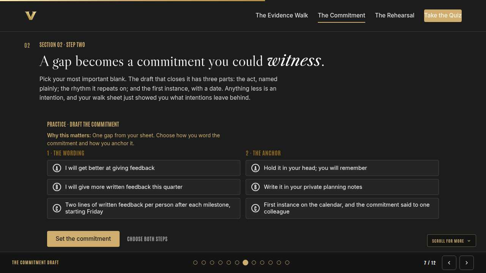
The commitment draft Full 10 min · Core 7
Turn each manager's chosen blank into a three-part commitment: act, rhythm, dated first instance, anchored outside their head.
Say
“Now the blank earns its keep. A commitment that can close a gap has three parts, and you need all three: the act, named so plainly a new hire could check it; the rhythm it repeats on, monthly or per milestone; and the first instance, with a date inside two weeks. Watch what happens without them: I will get better at feedback has none of the three, and it is exactly the sentence that produced your blank in the first place.”
Do
- Run Draft the commitment from the front; managers make both choices, then draft their real commitment on the walk sheet.
- Walk the room reading drafts; run the three-part test out loud at tables that finish early.
- Run the table check: drafts read aloud to a neighbor, three-part test applied, failures fixed on the spot.
Ask
“Which of the three parts was hardest to pin down?”
Expect:
- The rhythm: how often is honest
- The date: two weeks feels fast
- The act: naming it small enough
Respond: Small enough is the craft. A commitment sized to impress fails by Friday; one sized to repeat becomes the habit the standard was pointing at all along.
Debrief: Act, rhythm, dated first instance, plus an anchor outside your own head. That is a commitment the standard can count.
Watch for: Drafts that commit to everything at once. One gap, one commitment; the month-end rewalk picks the next.
Transition: “The draft reads well on paper. The last step finds out if it survives your own voice.”
Core path: Core: skip the front-of-room builder; the three-part test runs directly on real drafts at tables.
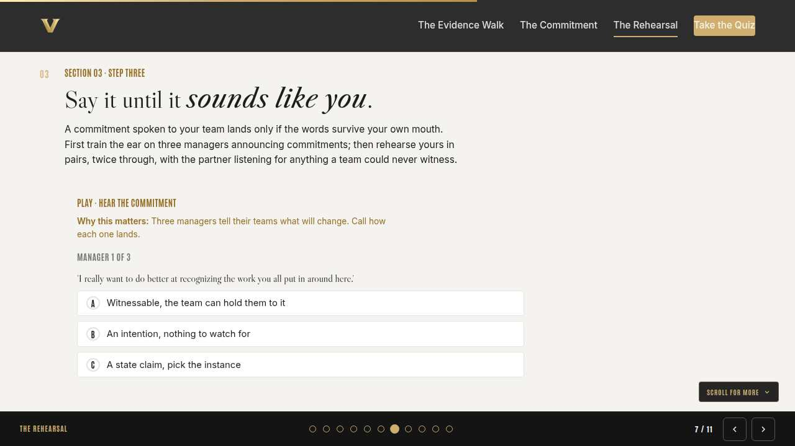
The rehearsal Full 9 min · Core 6
Rehearse the commitment aloud in pairs until it is witnessable language that sounds like the manager who will say it.
Say
“Words behave differently out loud. A draft that reads fine on paper can come out of your mouth as a hedge, and your team will hear the hedge. So we rehearse. First we train the ear on three managers announcing commitments; then pairs: say yours as you will say it at your team meeting. Your partner listens twice, once for anything the team could never witness, once for whether it sounds like you or like a worksheet.”
Do
- Run Hear the commitment from the front; the room calls each announcement before you reveal.
- Run the pair rehearsal, two rounds each; walk the room and listen for hedges like try and hopefully.
- Ask for two volunteers to say their commitment to the whole room; applaud plain language over polish.
Ask
“What did your partner catch that you did not?”
Expect:
- A hedge word softening the whole thing
- A state claim hiding in the middle
- That it did not sound like me yet
Respond: The not-me answer matters most: teams smell borrowed language instantly. Keep the three parts and swap every other word for your own until it lands naturally.
Debrief: Rehearsed twice with a listener beats polished ten times alone. The words are ready when the act, rhythm, and date survive your own voice.
Watch for: Pairs drifting into discussing the gap instead of rehearsing the words. Redirect: this step is mouth practice; the analysis already happened.
Transition: “Cards next: the commitment and its first witness, on paper before you stand up.”
Core path: Core: one rehearsal round each instead of two; skip the whole-room volunteers.
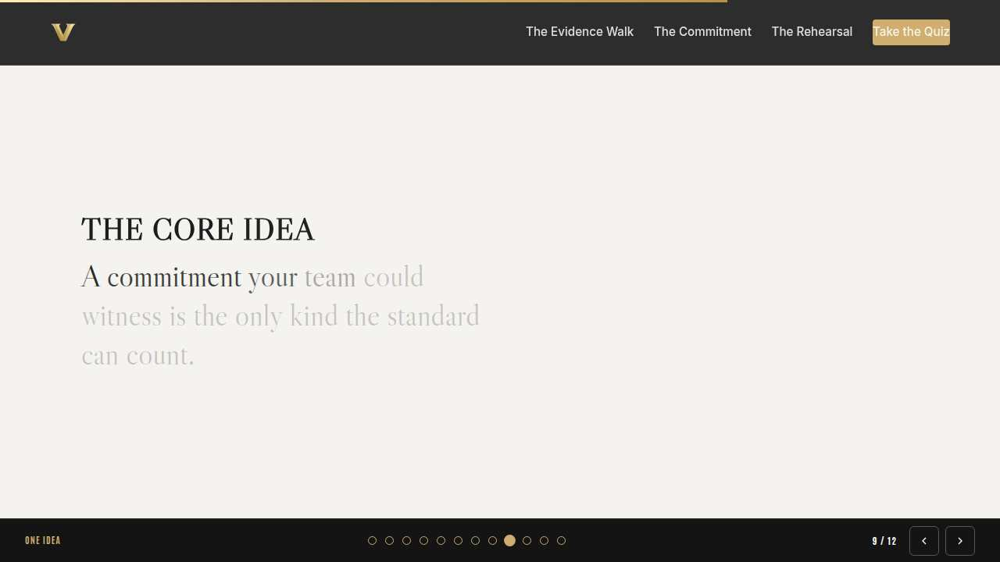
The core idea Full 2 min · Core 1
Land the one sentence the session exists to install.
Say
“If you keep one sentence from today, this is it. Read it once, out loud: A commitment your team could witness is the only kind the standard can count.”
Do
- Pause two beats after reading; the word animation carries it.
Transition: “The recap makes it stick.”
Core path: Core: pass through in stride; the sentence reads itself.
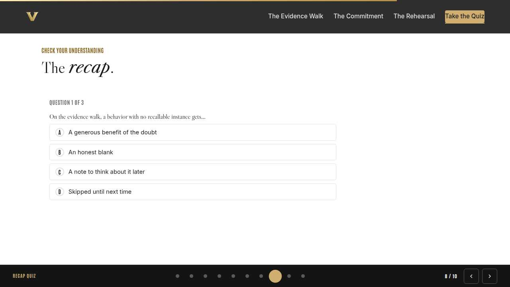
Recap quiz Full 5 min · Core 4
Score the learning while it is fresh; wrong answers are teaching moments, not failures.
Say
“Three questions, on your own screen. Answer honestly; the explanations are where the learning sticks.”
Do
- Give the room 90 seconds to run it individually.
- Ask for a show of results in chat: how many got 3 of 3?
- Read out the explanation for whichever question drew the most misses.
Watch for: Rushing past the why lines. The explanations carry the teaching.
Transition: “Now point it at your real week.”
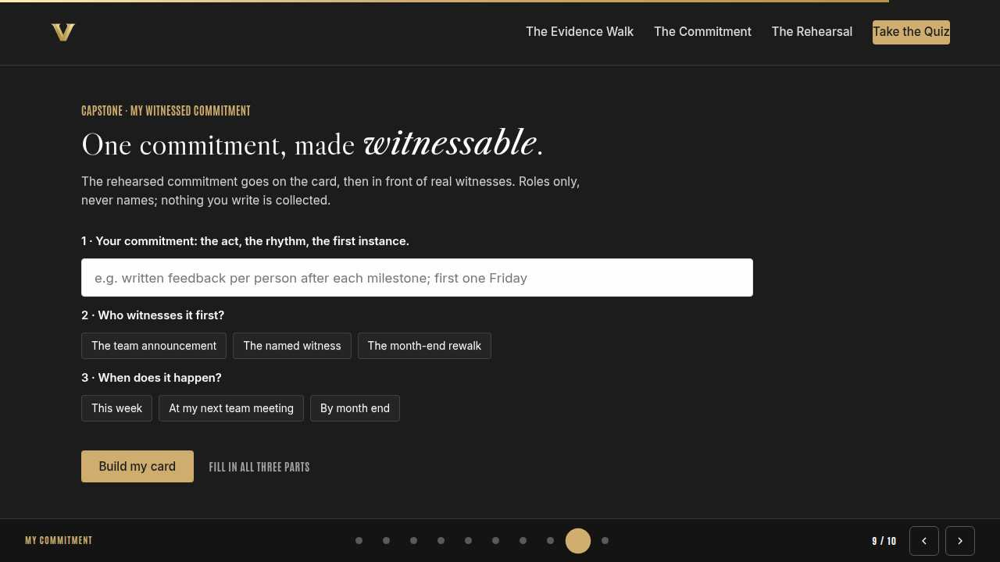
Capstone commitment Full 6 min · Core 4
Convert the session into one named, dated action per person.
Say
“Last build. The card gets your commitment in its final rehearsed wording, and the witness who hears it first: your team at its next meeting, or one colleague who will check back in a month. Roles only, never names. Write it, copy it to your phone, and put the first instance on your calendar before you stand up.”
Do
- Two quiet minutes; everyone builds their own card.
- Invite two or three volunteers to read their card aloud or paste it in chat.
- Remind: copy the card somewhere you will see it this week.
Watch for: Vague entries. Nudge for a name-able situation and a real date.
Transition: “Last slide.”
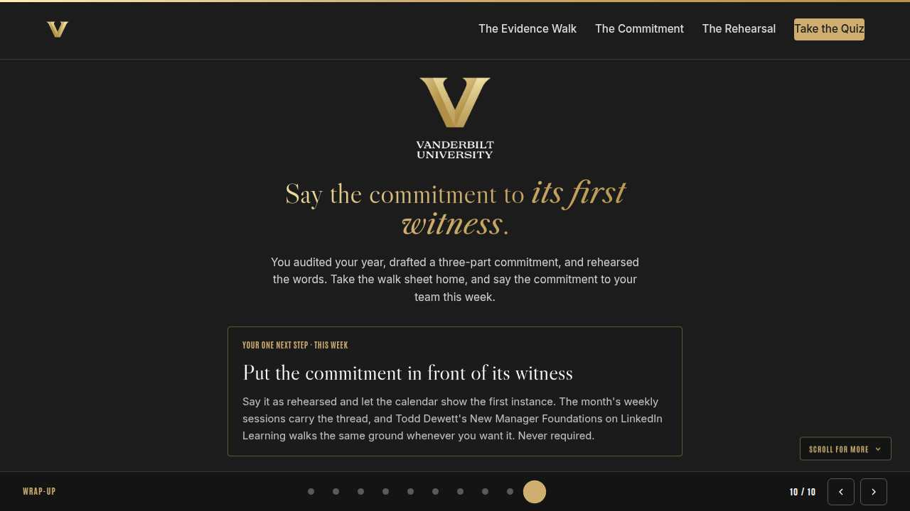
Closing Full 2 min · Core 2
End with the next step and where this thread continues.
Say
“You leave holding the three artifacts this month was about: an honest walk sheet, a three-part commitment, and words you have already said out loud twice. The weekly sessions keep the thread: Monday gave you the witness test, Tuesday showed everyone the Oracle 1:1 and feedback tools where several of these behaviors leave their evidence, and Thursday sharpened the clarity that expectation-setting runs on. If you want a companion, Todd Dewett's New Manager Foundations is this month's LinkedIn Learning pick. There whenever you want it, never an assignment.”
Do
- Point at the next-step card; one sentence.
- Name the rest of the week's rhythm: the other sessions echo this month's theme.
Generated from facilitator/notes.json. The on-screen facilitator edition lives at ./ alongside this guide.